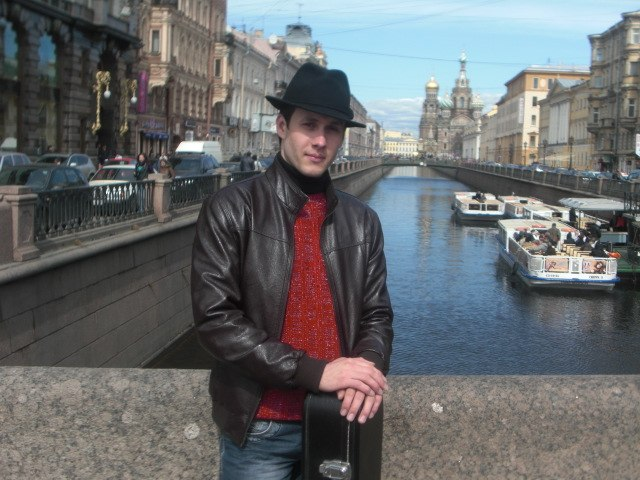

Немного о себе
Окунемся в прошлое! Закончил музыкальную школу по классу классическая гитара. Затем переехал в замечательный город Гомель, где незаметно пролетели четыре учебных года в музыкальном колледже H.Ф Соколовского погруженные в непрерывное совершенствование игре на гитаре. Благодаря Игорю Шошину организатору и основателю многих мероприятий по развитию гитарной жизни в нашей стране. Достаточно назвать Конкурс “Ренесанс гитары”, Конкурс композиторов по сочинению музыки для гитары, замечательной летней гитарной академии и многое другое.
Во время одного из таких гитарных фестивалей И.К Шошин познакомил меня с замечательным музыкантом из Санкт-Петербурга Анатолием Изотовым, который только приехал из Брюсселя (королевской академии музыки) и после чарующего концерта я сказал себе, что обязательно продолжу обучения у Анатолия. После завершения Колледжа я перебираюсь в город герой Ленинград, где продолжил обучаться у Анатолия и это занимает около 4 лет. После всех поисков знания в области искусства музыки я решил вернуться домой и начать организовывать профессиональное обучение в нашем городе Бобруйске. Два года поработал в музыкальной школе и сейчас веду студию Авиатор. Интенсивно изучаю программирование для создания онлайн портала, чтобы именно там создать и найти единомышленников по написанию пошаговых уроков по сочинению музыки, так как эта тема очень не раскрыта. Именно это и стало основой, большим желанием для изучения программирования.
Собираюсь переезжать в Минск для работы и глубокого изучения программирования и в то же время проводить обучение в выходные дни, так как это мне очень нравиться и я надеюсь воспитать достойных музыкантов, которые будут радовать нас своим творчеством. Помимо этого продолжаю учиться в Смоленском Государственном институте искусств на эстрадном отделении по классу “гитара в оркестре” и уже добрался до пятого курса. До этого были еще два университета, которые не удалось завершить, так как в первую очередь я учусь не за кордонную бумажку, а за реальные и практические знания. Все остальное вы можете прочитать на сайте, который размещен в контакте. Всем добра и здравости в мышлении.